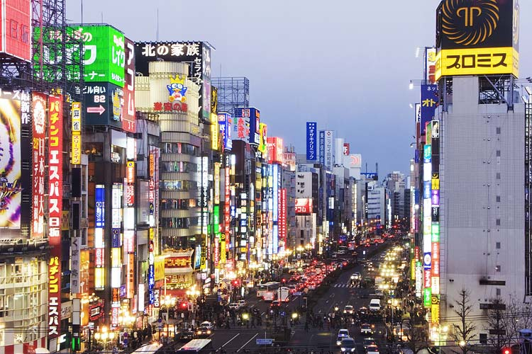
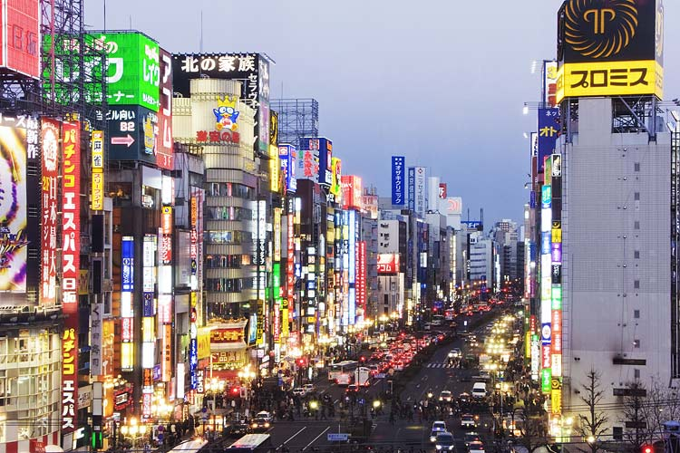

Famous Cities
London
London is the capital city of England. It is the most populous city in the United Kingdom, with a metropolitan area of over 13 million inhabitants. At the beginning of the 21st Century London continued to grow rapidly. The Greater London Authority was created in 2000. The same year the Tate Modern opened in a former power station. Furthermore the London Eye opened to the public in 2000. In 2012 a new building was opened in London called the Shard. Also in 2012 the Olympics will be held in London, confirming its status as one of the world's greatest cities. Waterloo Bridge was built in 1945. The Royal Festival Hall was built in 1951. Pollocks Toy Museum opened in 1956. The Shell Centre was built in 1962. Millbank Tower was built in 1963. One of London’s famous landmarks the Post Office Tower opened to the public in 1966. Haywards Gallery opened in 1968. The Museum of London opened in 1976. A Museum of Garden History opened in 1979. The London Transport Museum opened in 1980. The Museum of the Moving Image opened in 1988. Somerset House opened to the public in 2000. It includes the Courtauld Gallery and the Gilbert Collection.
Paris
Paris is the capital and most populous city of France.Paris is more than 2,000 years old. Gauls of the Parisii tribe settled there between 250 and 200 BC and founded a fishing village on an island in the river that is the present-day Ile de la Cité -- the center around which Paris developed. Planning for Paris and the Paris Basin region includes consideration of large land areas in the Seine River valley all the way to the mouth of the river. New towns, parks, industrial locations, and expanded functions of existing towns are contemplated for this corridor on both sides of the Seine.
Tokyo
Tokyo is the capital of Japan, the center of the Greater Tokyo Area, and the most populous metropolitan area in the world. Compared to the likes of Rome, Paris or London, Japan’s capital is a relative newcomer to the global city scene. Still, in less than 500 short years, Tokyo has had more than its fair share of historical setbacks and triumphs, a flourishing arts scene and plenty of devastating natural and man-made disasters. Tokyo’s story begins in 1590, when the shoguns (Japan’s hereditary military dictators) moved their base from Kyoto to where Tokyo stands today. They named the city Edo, and although the Emperor remained in Kyoto, power and profit moved east with them. Sealed off from the rest of the world for another two centuries, the Edo period was a time of samurai, tea ceremonies and calligraphy. When the shogunate fell in 1867, Emperor Meiji seized the real reins of power and moved to Edo. He renamed it Tokyo and established it as Japan’s capital, throwing open the country’s borders and actively welcoming outside influences, particularly western ones. He made Shinto the state religion, thus establishing himself as a divine being with total power over the nation. Perhaps unsurprisingly, this whirlwind of change became known as the Meiji Revolution and it thrust Tokyo headlong into the 20th century. People flocked to the city from the countryside, educational standards rapidly improved and the arts and the theatre both bloomed. Then in 1923, Tokyo was devastated by the Great Kantō Earthquake. With over 100,000 dead and nearly 2 million left homeless, the city was still trying to recover when war swept across the world. Although Tokyo escaped the atomic bomb, WWII rained down over 100 other missiles onto the city, decimating buildings and halving the capital’s population in only five years. Yet, somehow, Tokyo really did rise from the ashes, entering the 21st century as one of the greatest cities in the world. Did you know? • The engineering company behind Tokyo Tower believe it could withstand an earthquake that is twice as intense as the 1923 Great Kantō earthquake, which reached a magnitude of nine. • When it was completed in 2011, the Tokyo Skytree was the tallest tower in the world. • In 2007, Tokyo Racecourse built the largest screen in the world. It measured 66m (218ft) in width by 11m (37ft) height.